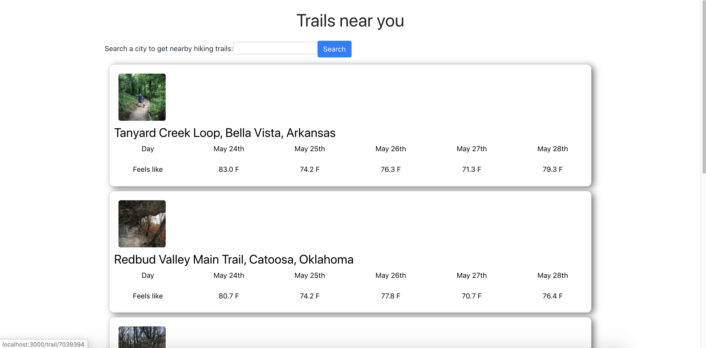

Travis Chan
Web Developer. Nature Lover. Hacker.
Hi I'm Travis!
I am a computer science sophomore studying in UC Davis, with passion in web development and data science. I participated in my first hackathon in 2020, and I loved it ever since. I've been hiking around NorCal quite a bit, and Lake Tahoe will be my next (after the pandemic)! I am born and raised in Hong Kong before coming to Davis.
Projects
Spendings App
Jul 2020
I created this mobile app to keep track of my spendings and offer insights about my consumption pattern, such as how frequent will I need to replenish groceries. This is my first time doing mobile development. I use Expo to publish my project, but I could not quite make it public to everyone.
Soccer Blog
Jun - Jul 2020
I have been a big fan of soccer (or football in Brit. English), and Chelsea is my favorite team. I started this project after the season resumed in June 2020 in light of the pandemic. The website keeps track of every match Chelsea played and my ratings on the players. I am able to watch every game since it's summer, and hopefully I can continue this when school starts.
HikeGest
May - Jun 2020
As a nature lover, I always enjoy hiking. I was joined with 2 other teammates that I met in Backyard Hacks, a virtual hackathon, and work on a website that recommends which hiking trails near you have the best weather conditions.
My Spotifyy
Mar - Apr 2020
I love listening to music, and I always wanted to know more about my music taste through numbers. That's why I created this website where users can check their top artists, tracks, and genres. Users can also explore artists and learn more about their popularity.
Data Visualisation of NBA2K League
Feb 2020
My team and I chose this idea because one of the tracks of SacHacks 2020 was E-sports, and the E-sports market is growing rapidly. We performed statistical analysis on each team and player of the league, and display their rankings and comparisons based on user's input (such as number of rebounds or blocks).
Davis Lost and Found
Jan 2020
The story of this idea was that I found so much posts on Facebook about students' lost items, be it a HydroFlask full of memorable stickers or a Walmart bike. We created this website in HackDavis 2020 for Davis students to recover their possessions.